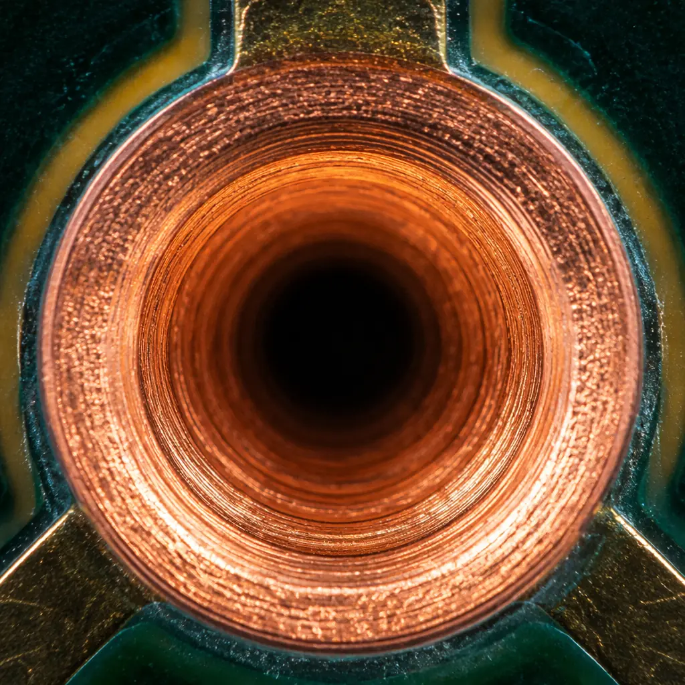
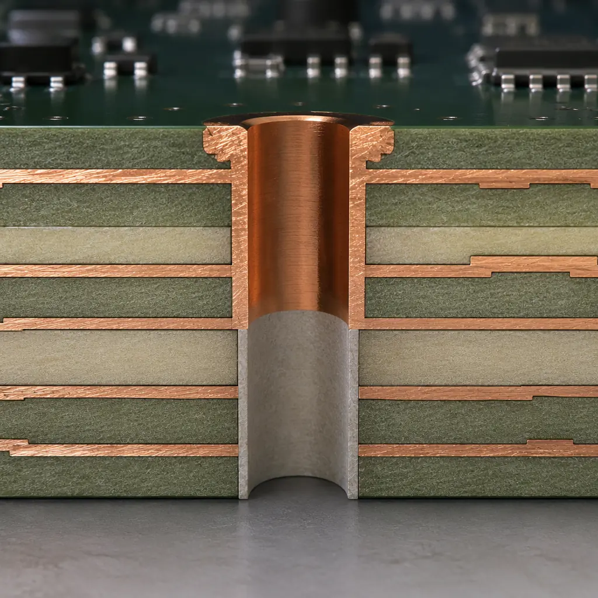

Your differential pair simulation looks perfect. Insertion loss is within spec, return loss is under -15 dB, and the eye diagram is wide open. Then you build the board and the eye closes by 40% at the receiver. The culprit isn't your routing — it's the unused portion of every signal via hanging below the layer transition. PCB designers call it a stub, and at data rates above 5 Gbps, it becomes the dominant signal integrity problem on multi-layer boards.
At Huaxing PCBA, we back drill thousands of high-speed boards per month for telecom, data center, and aerospace applications — removing via stubs to <10 mil residual length tolerances. Here's what every PCB designer and procurement engineer needs to know about when back drilling is necessary, how to specify it, and what it costs.

What a Via Stub Is — and Why It Matters
In a multi-layer PCB, a signal transitions from one layer to another through a plated via. The via barrel extends through the entire board thickness — but the portion of the barrel beyond the signal's target layer carries no current. That unused segment is called a via stub, and electrically it behaves as an open-circuited transmission line stub.
At low frequencies, a stub is invisible. At 1 Gbps, a 100-mil stub in FR-4 introduces about 1 dB of insertion loss — negligible for most designs. But at 10 Gbps, that same stub creates a resonant null at approximately 7.5 GHz, right in the middle of the signal's frequency content. The result: dramatic reflections, eye closure, and bit errors. The relationship is quadratic — doubling the data rate quadruples the stub's destructive effect.
| Data Rate | Maximum Acceptable Stub Length (FR-4, εr≈4.0) | Typical Application |
|---|---|---|
| ≤ 1 Gbps | 300+ mil (7.6mm) — rarely a concern | Legacy digital, basic control signals |
| 2.5-3.125 Gbps | ~150 mil (3.8mm) | PCIe Gen 1, SATA 3G |
| 5 Gbps | ~80 mil (2.0mm) | PCIe Gen 2, USB 3.0, SATA 6G |
| 8-10 Gbps | ~40 mil (1.0mm) | PCIe Gen 3, 10GbE, USB 3.1 Gen 2 |
| 16 Gbps | ~25 mil (0.64mm) | PCIe Gen 4, 16G Fibre Channel |
| 25-28 Gbps | ~15 mil (0.38mm) | PCIe Gen 5, 25GbE, SFP28 |
| 56 Gbps+ | ≤ 10 mil (0.25mm) | PCIe Gen 6, 400GbE PAM4 |
This table explains why a standard 62-mil thick 16-layer board with signals transitioning from the top to layer 3 typically has a stub of about 50 mils. That's fine at 3 Gbps but fails at 10 Gbps. As our signal integrity guide explains, simulation without stub modeling is one of the most common reasons high-speed boards fail first-pass test.
Design Rule of Thumb: A via stub becomes a problem when its electrical length exceeds ¼ wavelength at the highest significant frequency in your signal (typically the 5th harmonic of the clock). For NRZ signaling at 10 Gbps (5 GHz fundamental, 25 GHz 5th harmonic), the quarter-wavelength in FR-4 is approximately 35 mils. If your stub is longer than that, you need back drilling.
How Back Drilling Works
Back drilling — also called controlled-depth drilling or stub removal — is exactly what it sounds like. After the PCB is fabricated and plated (all vias are already conductive), a slightly larger drill bit enters from the opposite side of the board and removes the unused portion of the via barrel. The drill stops a controlled distance short of the target signal layer, leaving a small residual stub.
The process requires three things that standard PCB fabrication does not:
Controlled-Depth Drilling Equipment
Standard PCB drills penetrate completely through the board. Back drilling uses a depth-controlled CNC spindle that can stop within ±2 mils of the target layer. The drill bit diameter is typically 8-12 mils larger than the original via drill to ensure complete copper removal from the barrel wall. For a 10-mil via, the back drill bit is typically 18-22 mils.
Precise Layer Registration
The drill must stop within a specific dielectric layer — not in the middle of a copper plane. This requires tight layer-to-layer registration during lamination. At Huaxing, we maintain ±3 mils layer registration for back-drilled boards, which ensures the back drill stops in the correct dielectric gap. We recommend designers leave at least 8 mils of clearance between the back-drill stop layer and the nearest copper feature — tighter than that and registration variation risks damaging the signal via itself.
Post-Drill Cleaning
Back drilling generates debris inside the via hole. Without thorough cleaning — typically a high-pressure deionized water wash followed by plasma desmear — residual copper particles can create intermittent shorts or degrade the dielectric. Our post-drill process includes 100% AOI inspection of back-drilled vias to verify complete copper removal and absence of debris.

When to Use Back Drilling — and When You Can Avoid It
Back drilling adds cost. A typical high-layer-count board with 200-500 back-drilled vias sees a 15-25% cost increase and 2-3 days additional lead time. Before committing, consider these alternatives:
Blind and Buried Vias — The Clean Alternative
If your design uses controlled-depth or laser-drilled microvias (blind vias that connect only specific layer pairs), the via physically doesn't extend beyond its target layers — there's no stub to remove. This is the preferred approach for high-density designs, but it increases layer count and lamination cycles. For example, a 12-layer board with blind vias from L1-L3 costs roughly 30-40% more than a through-via board — but eliminates stub concerns entirely. See our PCB via technology guide for a full comparison of via types.
Route Signals on Layers Near the Board Center
If your high-speed signals transition between layers that are both near the middle of the board, the stub length is split between top and bottom — effectively halving the problematic stub length. On a standard 62-mil 16-layer board, routing between layers 7 and 10 creates a 25-mil stub on each side instead of a 50-mil stub on one side. For signals up to 10 Gbps, this can eliminate the need for back drilling entirely.
Use Low-Dk Materials to Increase Acceptable Stub Length
The stub's electrical length depends on the dielectric constant. Moving from standard FR-4 (Dk ≈ 4.0) to a low-Dk material like Rogers 4350B (Dk ≈ 3.48) increases the acceptable stub length by about 7%. For mixed digital/RF designs where only a few signals need back drilling, consider using low-Dk laminate for those specific layers. Our PCB materials selection guide covers the full range of substrate options.
Design Rules for Back Drilling
Communicating back drill requirements to your fabricator requires clear documentation. Here's what we need to see in your fabrication drawing:
| Parameter | Recommendation | Why It Matters |
|---|---|---|
| Back drill diameter | Original via drill + 8-12 mils | Must be large enough to remove all barrel copper but not damage adjacent traces |
| Back drill-to-copper clearance | ≥ 8 mils from back drill edge to nearest copper | Prevents accidental copper damage during drilling |
| Target stop layer | Specify exact layer number and dielectric gap | "Drill from bottom to stop between L3 and L4" — be explicit |
| Maximum residual stub | ≤ 10 mils for 25 Gbps; ≤ 15 mils for 10 Gbps | Tighter tolerances cost more; don't over-specify |
| Back drill side | Specify top, bottom, or both | Usually only one side; both sides doubles cost |
| Via grouping | Group back-drilled vias by stop layer | Separate drill files per stop layer; reduces setup time |
Common Mistake: Designers sometimes back drill every via on a high-speed net — including vias that don't have stubs (e.g., a via from L1 to L16 on a 16-layer board). Only vias that don't use the full board thickness need back drilling. Over-specifying back drill locations wastes money: each unnecessary back-drilled via adds about $0.02-0.05 to the board cost. On a board with 1,000 vias, that's real money.
Back Drilling for Differential Pairs
Differential pairs create a special case. The two vias in a differential pair must have matched stub lengths — a difference of even 5 mils in residual stub creates a skew that degrades differential-to-common-mode conversion. At Huaxing, we back drill differential pair vias in the same drill cycle using the same depth setting, and we verify stub length matching via cross-section on first-article boards. The typical specification: residual stub difference ≤ 3 mils between the P and N vias of a differential pair.
For 56 Gbps PAM4 signaling (PCIe Gen 6 and 400GbE), the stub tolerance tightens dramatically: residual stub must be ≤ 8 mils with ≤ 2 mils matching between differential pairs. At these speeds, we also recommend TDR verification of back-drilled vias on first-article units — measuring the impedance discontinuity at the stub location and confirming it's below the 5% impedance variation budget. For more on high-speed design, see our impedance control guide.
Specifying Back Drilling on Your Fabrication Drawing
Here's the exact note we recommend for your fab drawing — it covers everything a manufacturer needs:
Sample Fab Note: "Back drill all vias identified in drill file BACKDRILL-1.TXT. Drill from bottom side using 0.55mm (21.7 mil) diameter bit. Stop in dielectric between layer 3 and layer 4. Maximum residual stub length: 10 mils (0.25mm). Verify stub removal via cross-section on 3 locations per panel. Clean all back-drilled holes per IPC-6012 Class 3 requirements."
Also include a separate mechanical layer in your Gerber package that highlights every via to be back drilled. Group vias by stop layer — if some vias stop between L3-L4 and others stop between L8-L9, these should be in separate drill files with separate fab notes. This prevents setup errors and reduces cost compared to mixing stop depths in a single drill file.
Huaxing's Back Drilling Capability
We back drill PCBs from 4 to 32 layers with controlled-depth accuracy of ±3 mils — suitable for signals up to 56 Gbps PAM4. Our process supports standard FR-4, high-Tg FR-4, Rogers, and mixed-dielectric stackups. Every back-drilled board receives:
First-article cross-section: We microsection 3-5 back-drilled vias on the first panel of every production run, measuring residual stub length and copper removal completeness. Reports ship with the boards.
100% via inspection: After back drilling and cleaning, every back-drilled via passes through AOI to verify complete copper removal. Our 98.7% first-pass yield on back-drilled boards means fewer rework cycles.
TDR verification (optional): For boards operating above 25 Gbps, we offer TDR measurement of back-drilled via impedance on the first article — confirming that residual stubs don't create impedance discontinuities exceeding your specification.
Whether you need a 24-hour quick-turn prototype with 50 back-drilled vias or 80,000m²/month production with thousands per panel — we have the controlled-depth drilling capacity and the inspection rigor to deliver. Contact our engineering team to discuss your back drilling requirements, or upload your Gerber files for a same-day DFM review.